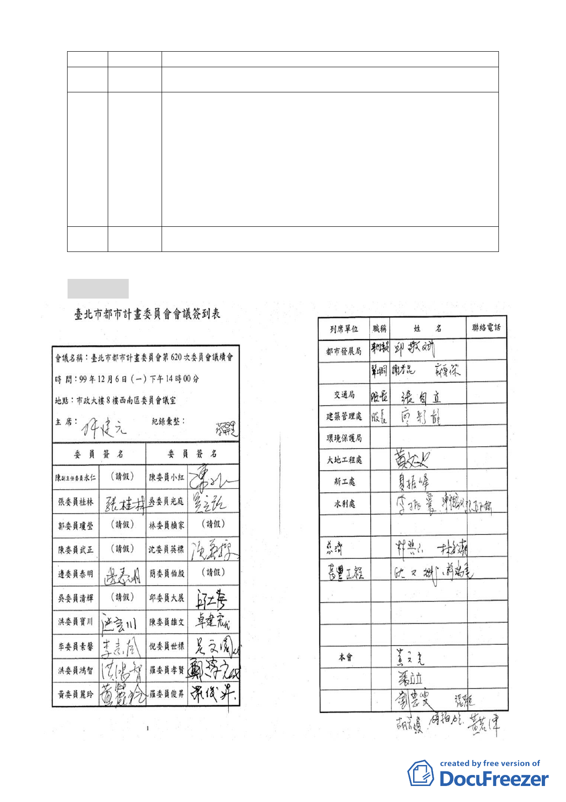

好的環境並提供更好的福利。
（放棄發言）
106 陳美月
本人是內湖居民也是骨髓捐贈的志工，推展骨髓捐贈相當困難，
107 王土坤 本案推動似乎也被「保護區」這三個字所框住，果真如此就不用
（王先生代） 來開會了。「保護區」應該是在某種規範或條件之下經各位委員審
慎考量後是可以變更與通過的。憲法都可以改了，只要合乎法令
與當時現況是最有利的，就應該可以朝人民最有利的方向去做才
對。另ㄧ方面除對慈濟有感恩卻又把本案妖魔化，慈濟 40 多年來
始終如一，不可能因一個個案就變了。各位有機會到慈濟其他會
所就會發覺都是低密度建築，不可能有高密度開發，個人仍表支
持本案能盡速通過。
（不在現場）
108 許上山
貳、散會（21：15）
- 15 -